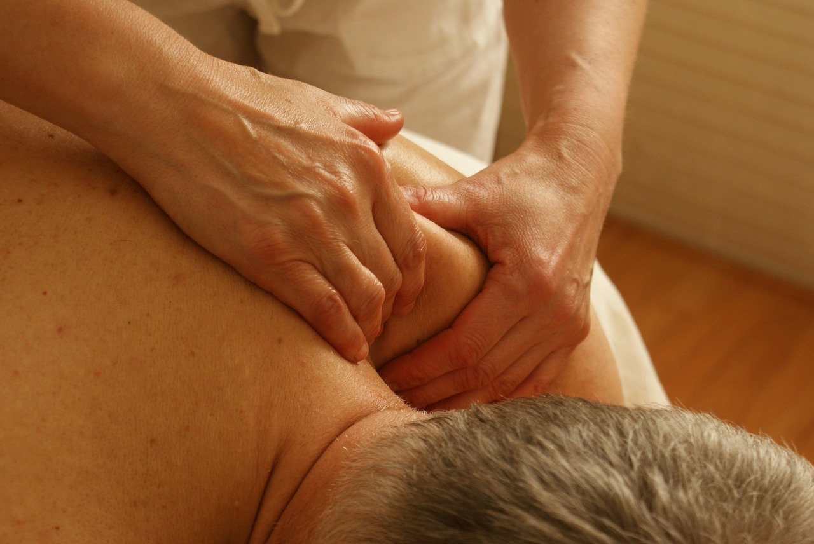

Massage

Each Therapeutic Massage treatment is tailored to the individual
clients needs. At the start of the first session a consultation is
carried out to ensure the correct treatment is carried out and to find
out the clients requirements.
A relaxing massage performed by a skilled massage therapist can ease
tension and anxiety and bring about a feeling of deep relaxation,
loosen tight muscles, ease muscular aches and pains and improve the
mobility of joints. It can also help eliminate toxins and improve
circulation and lymph flow.
We offer three different treatment lengths. A fully body massage,
which usually lasts and hour and works on the back, neck and
shoulders, front and back of the legs and arms; although a face and
scalp massage and foot massage can also be included. A 3/4 hour
massage and a 1/2 hour back, neck and shoulder massage.
Some of the conditions that can also benefit from this treatment
include insomnia, fatigue, anxiety, neck/ back/ shoulder stiffness or
pain, strains, sciatica, aching hips, foot ache & arthritis to name
but a few.
Indian Head Massage
This technique is also known as ‘on the spot’ or ‘seated massage’
because the person is sat in an ordinary chair. Indian Head Massage
is carried out over clothing without the use of oil. It is an
excellent introduction to massage for those who have never
experienced it before. The treatment concentrates on the upper back,
neck, shoulders and head. It is especially beneficial to anyone who
sits for prolonged periods, i.e. computer users who often experience
pain and tension in the neck and shoulders and may be prone to eye
strain, headaches and lapses in concentration. We demonstrated this
therapy on central televisions ‘lifeline’ programme.